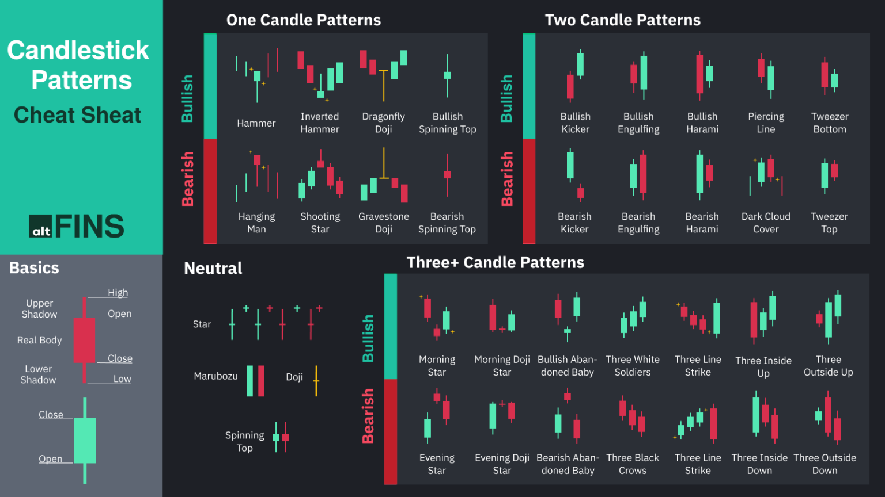
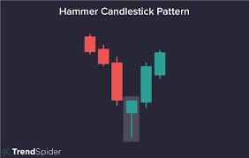
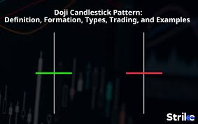
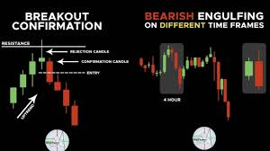
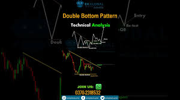

Master Crypto Chart Patterns & Indicators
Learn candlesticks, chart patterns, and indicators with visuals & examples.
What are Candlesticks?

Candlestick charts are a popular way to display price movements of a financial asset. Each "candlestick" represents price action over a specific period of time (e.g., one minute, one day, etc.).
- Body: The rectangular part of the candlestick, representing the open and close prices.
- Wicks/Shadows: The thin lines extending from the body, showing the high and low prices reached during the period.
Popular Candlestick Patterns
Hammer

A bullish reversal pattern with a small body and a long lower wick, indicating a potential bottom.
Doji

Characterized by a very small or non-existent body, suggesting indecision in the market.
Engulfing

A large body that completely covers the previous period's body, signaling a strong shift in momentum.
Top Chart Patterns
Head & Shoulders
A classic bearish reversal pattern with three peaks, a "head" in the middle, and two smaller "shoulders" on either side. A break below the neckline confirms the pattern.
Double Bottom
A bullish reversal pattern shaped like a "W," formed when the price drops to a low, rebounds, drops to a similar low again, and then reverses direction to the upside.

Most Used Indicators in Crypto Trading
The **Relative Strength Index (RSI)** is a momentum oscillator that measures the speed and change of price movements. It is a widely used tool for identifying overbought or oversold conditions.
Interactive Demo
Frequently Asked Questions
RSI is a momentum oscillator measuring the speed of price change, while MACD is a trend-following momentum indicator that shows the relationship between two moving averages.
Moving Averages are used to identify the direction of the trend. A common strategy is to buy when a shorter-term MA crosses above a longer-term MA (a "golden cross").